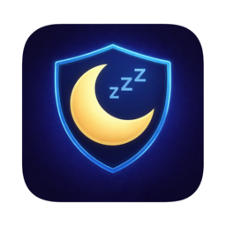
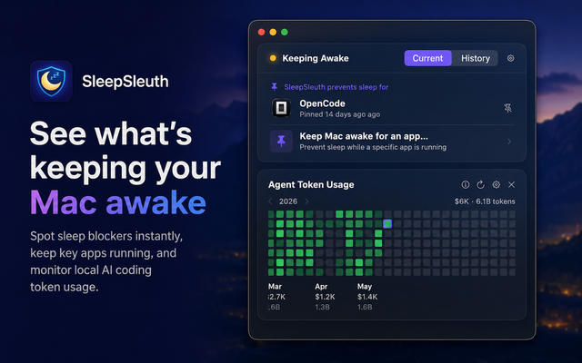
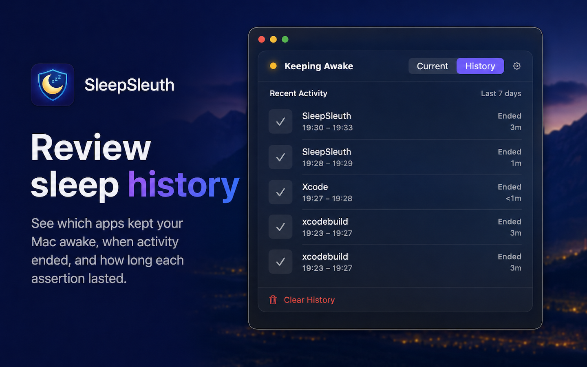
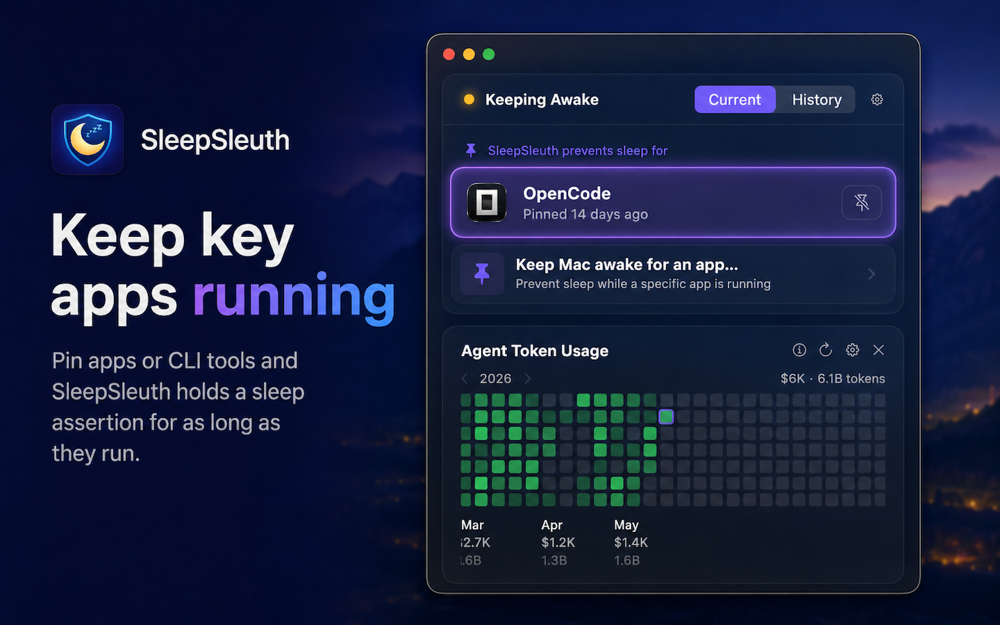
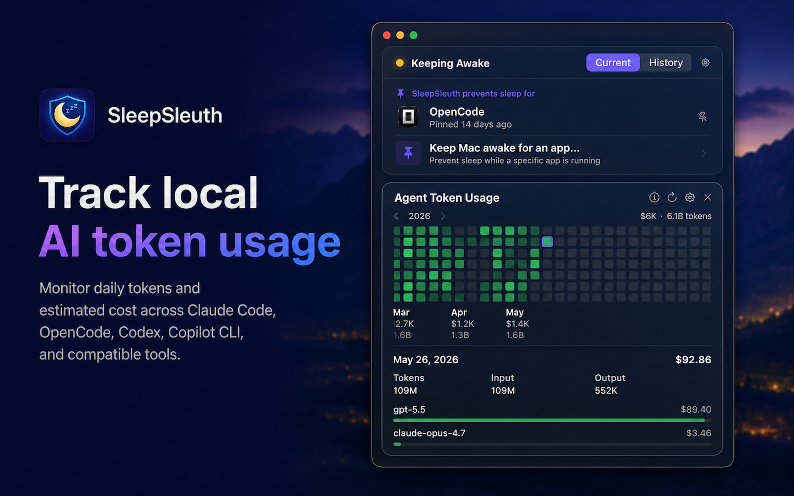

SleepSleuth lives in your menu bar, shows which apps and processes are blocking sleep, pins long-running work on purpose, and optionally tracks local AI coding token usage.
From the menu bar, SleepSleuth gives you a focused view of live sleep blockers, intentional pins, history, and optional AI coding usage.




Add an optional card for local coding-agent token usage, daily heatmaps, model breakdowns, and estimated costs across Claude Code, OpenCode, Codex, OpenClaw, GitHub Copilot CLI, and more.
Review a local timeline of external sleep-preventing assertions, including active and ended state, end times, and durations.
Compact card controls, Current and History tabs for sleep activity, simpler usage-source setup, and improved app settings keep the menu bar window focused.
Token usage parsing is faster and more accurate, cached cost data stays stable, and navigation resets cleanly when the popover closes.
Polls macOS power assertions every few seconds so you always have the latest picture — yellow icon means something is active, default means all clear.
See a local timeline of sleep-preventing activity, including active and ended assertions with durations, so you can spot recurring blockers.
Pick any running app or command-line tool from the inline process picker and SleepSleuth prevents sleep on its behalf. Pins survive relaunches and reactivate automatically.
Optionally review daily local token totals, model breakdowns, and estimated costs for popular AI coding tools, all from a card you control.
Authorize your home folder once and SleepSleuth can detect common coding-tool usage folders using macOS security-scoped access.
Get a native macOS notification whenever a new sleep-preventing assertion appears, so nothing sneaks by unnoticed.
For user-owned processes, get a ready-to-use kill command and one-click Terminal access to reclaim your Mac’s sleep.
Built with SwiftUI for macOS 14+. No Electron, no web views, no telemetry. Local data stays local and the app runs quietly in the menu bar.
Get SleepSleuth from the Mac App Store. It runs quietly from your menu bar with no setup required.
The icon turns yellow whenever something holds your Mac awake. Click to see the full list with details and live durations.
Pin apps that need to keep your Mac awake, review sleep history, or drill into a process to see details and take action.
Add the optional Agent Token Usage card when you want local AI coding usage and estimated costs beside your sleep controls.
Built for macOS 14+ and available on the Mac App Store.
Get it on the Mac App Store